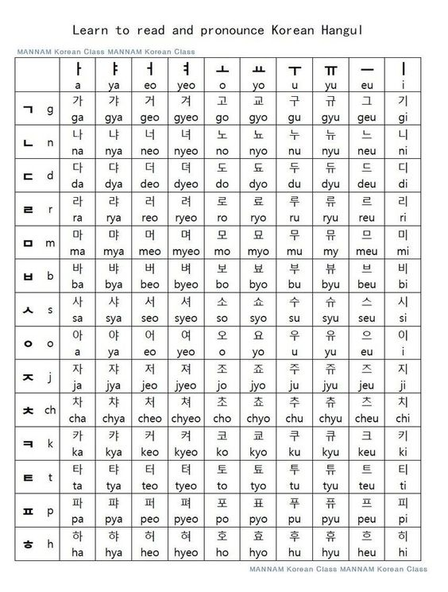

About us
안녕하세요! (Hello!) I'm passionate about Korean language and culture, and I'm thrilled to embark on this learning journey with you. As someone who appreciates the beauty of 한글 (Hangeul) and the rich traditions of Korea, I'm excited to share my knowledge and experiences. Join me in exploring the intricacies of the language, unraveling its linguistic nuances, and immersing ourselves in the vibrant world of Korean communication. Let's embrace the joy of learning together as we navigate the exciting path of mastering the Korean language. 함께 공부해봐요! (Let's study together!)
Learn Hangeul
What is Hangeul?
The Korean alphabet, known as Hangul[a], Korean: 한글 in South Korea and Chosŏn'gŭl (조선글) in North Korea, is the modern official writing system for the Korean language. The letters for the five basic consonants reflect the shape of the speech organs used to pronounce them, and they are systematically modified to indicate phonetic features; similarly, the vowel letters are systematically modified for related sounds, making Hangul a featural writing system. It has been described as a syllabic alphabet as it combines the features of alphabetic and syllabic writing systems.

Vocabulary
Basic Korean Phrase
| No |
Korean Words |
Meaning |
| 1 |
네 (ne) / 예 (ye) |
Yes |
| 2 |
아니오 (a-ni-yo) |
No |
| 3 |
괜찮아요 (gwaen-chan-a-yo) |
That's okay |
| 4 |
안녕하세요 (an-nyeong-ha-se-yo) |
Hello |
| 5 |
감사합니다 (gam-sa-ham-ni-da) / 고마워요 (go-ma-wo-yo) |
Thank you |
| 6 |
미안합니다 (mi-an-ham-ni-da) / 미안해 (mi-an-he) |
I'm sorry |
| 7 |
잠깐만요! (jamkkanmanyo!) |
Just a moment |
| 8 |
몰라요 (mollayo) |
I don't know |
| 9 |
알아요 (arayo) |
I know |
| 10 |
좋아요 (joayo) |
Good |